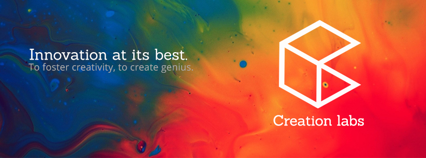

Home
Research Interests
Current Research
Resume
People and travel
Projects
* Creation Labs
Software & Tutorials
http://i4d.mit.edu/
Sponsors
 |
Creation LabsInnovation at its best |
Currently, I am serving as the co-lead of Creation Labs at VIT - a multidisciplinary research platform which we co-founded in 2014

Creation Labs
Member of Consortium for affordable Medical Technologies (CAMTech)
is a student driven space which encourages students to design and innovate in every possible field. A place where students are encouraged to think out of the box, be creative and bring out the best in themselves. Its a lab by the students and for the students. The students get a chance to work on project(s) of their choice under excellent guidance and with all the materials provided for. They also get to interact with industry experts, students and professors from international universities and other leading minds from different parts of the world. Our aim is to not only build prototypes but also to take them to market stages.
What we do
We bring together enthusiastic students pooling our skill sets to develop unique and efficient products that could potentially improve human lives.
We strive to find good solutions to unsolved problems and innovative alternatives to existing ones.
We create a network of engineers, both students and professionals to share expertise and work on multidisciplinary projects.
Three core factors which differentiate us from academic laboratories:
*we are not lead but mentored (more than 100+ mentors apart from VIT faculty)
*equal focus on product experience and technology development
*disruptive and frugal innovation.
How we do it
We identify problems and dedicate substantial amount of time on problem identification, which helps us to realize and clearly understand our end goals.
We interact with professionals and ideate to envisage possible solutions.
We follow a cycle of designing, prototyping, testing and taking feedback to improve and come up with a better product.
We started as a group of eight students and soon expanded into 60 member student group, now we function with an incoming training batch of 110 students.
A small set of criteria govern the student admission into the lab,
A clearly defined problem statement -> for projects
ability to collaborate and commit to the overall improvement of the project & lab -> for students and teams
We at Creation Labs aim at focusing our efforts for working with the best, on innovative and well defined projects, developing our skills and talents. Each person selected brings us a new set of much needed skills in the lab and innovative projects.
Current challenges
challenges to cater for the needs of diverse projects
academic commitments, resources and timely funding
access to state of the art technologies which are confined to respective departments and dedicated R&D facilities
travel grants
Present Status and Future prospects
Currently, we have 14 projects on going in the lab. Apart from their primary projects, students also get the opportunity to work on their personal projects, which we value equally. This accommodative and collaborative attitude that diversifies our research and knowledge. Over the past year, we learnt about the advantages that students appreciate and consider important such as, freedom to choose the project and the flexibility to work & 24 X 365 hours access, are some things that we would like to maintain. Also we received valuable feedback suggesting us to increase the number of projects and connect with similar teams in international institutions of higher education, which are working to our best.
Our initial motto was to structure a platform for students and faculty in VIT who wish to participate and erase the boundaries which suppress interdisciplinary research. The feedback has been rewarding and we are constantly trying to improve and inculcate some of the expectations of a 30,000 strong student body.
The full functioning of the lab commenced in February 2014, an important aspect of the lab has been to actively engage in hack-a-thons. Our members had participated in more than 12 technology hack-a-thons and organized about 6 hack-a-thons as well.
Some of our projects in the lab, are a brainchild of these hack-a-thons. We try to actively publish, in a way improve, our work by participating in events all across the globe.
The publications are not mandatorily in academic journals and conferences, but we encourage detailed documentation on our project websites (tutorials and software available under open source licenses) through which we would like to involve a larger community in our approach to interdisciplinary innovation. We have planned to expand this perspective towards research and product development by simple tools such as custom designed online portals and project management systems.
For example, Open Projects
Some of our project web pages, Project Sugar cube,
Open P R T (open source prosthesis project)
Considering the nascent stage of this unorthodox multidisciplinary research platform, its difficult to derive the relation with improved academic performance of students. But we have observed a consistency in student performance and overall development of participating students
Achievements.
Though we do not measure the success of the lab by its achievements, but the achievements of our members are what we are proud of. We were one amongst the winners in, the CAMTech India Jugaadathon in Kolkata (all three prizes), Big data Hack-a-thon 2014, MIT Grand Hackfest 2014, CAMTech Uganda 2014, etc
Partner Organizations and Institutions: CAMTech, Massachusetts Institute of Technology, Harvard Medical School, Massachusetts General Hospital, MIT Hacking Medicine, Novartis Foundation, UCSF and Wipro etc
The Creation Lab fair

India's first Wearable technology hack-a-thon
Created 26 October 2014.
Last updated 16 December 2014.
Created and maintained by Karthik Paga.